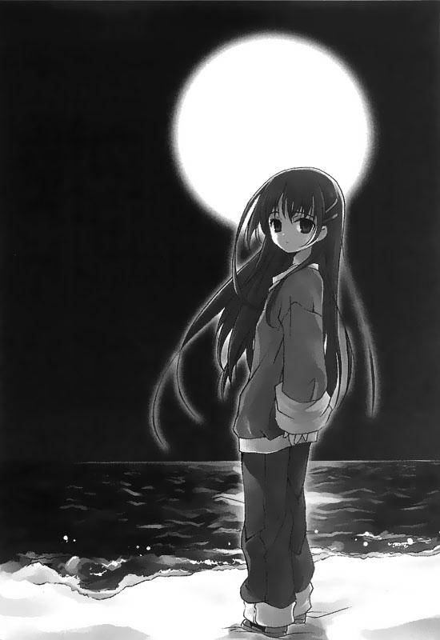

回到顶部

前往底部

10.スカーレット


「……我的时间静止了。」
我透过电视映像管中得到了许许多多的知识，明白了世间各种无所谓的价值观。然而，不知何时开始，我对于现实的体认却变的越来越稀薄，胸中的情感变得越来越空洞。
「……然而，我还是喜欢阅读地图。」
除了地图，我也喜欢汽车、火车；喜欢任何能够载着我到其他地方去的交通工具。我喜欢摊开地图，趴在床上，想象着自己搭乘各式各样的火车穿梭在各个不同的铁路线上；相像自己坐在各种房车、轿跑车、休旅车中在各地遨游。
……我喜欢沿着地图，相像自己坐在车上，在延伸向日本列岛各个角落的国道1号线上，永无止境地奔跑着；载着我开往如梦境中那般蔚蓝的天空下，载我抵达看得见美丽海洋的海岸边……
我总会想象着自己坐在车上，行进在海峡沿岸圆弧形的车道上；想象着自己随着坐车行驶过烈日映照的白砂湾……
只要我闭上眼镜，我便哪儿也到得了。
——只要我闭上眼睛，我便可以看见过去我从未见过的景致，踏上我这辈子决不可能造访的城域……
「我看着电视……吸收着视讯带来的，无谓的庞大知识情报……」
「我看着电视……任凭心中的憧憬日渐滋长，一点一滴地蚀去自己的心灵变得空洞……」
——一月二十一日琦玉县某处——
雨后的天际，几片浮云飞快地略过深邃的高空。柏油地上还淌着雨水，在轮胎驶过时发出了——哗啦的水花飞溅声。这天，我们依旧持续开着车子。
我们没有明确的目的，只是任凭引擎带动车胎不断地在柏油路上转动。
此时的我根本没想要将车子开往昨天我和濑津美在谈话中提及的淡路岛。因为在我这么做之前，第一个想要面对的问题就是，现在我身上带的现金就连汽油钱都不够付。
我一边想一边驾着老爸银色跑车直行在不知名的道路上——话说，这里是哪里呢……就在这时候，我发现到了这么一个更为切身的问题。
其实我本来就对日本的地理不是很在行。再加上现在卫星导航又不能用，让我对于究竟身在何处这个问题，更是完全得不到任何依据了。于是我下意识地开始摇晃着脑袋，边开车边张望着四周的路标。
「嗯……还是看不懂呀……」
「……怎么了么？」
「嗯……没有啦。我不知道我们现在到底来到哪里了。」
濑津美看了我的动作出声问我怎么回事，而我也简简单单地回了话。
（唉，我想这个问题就算找她问大概也得不到什么帮助吧……）
「入间……琦玉县的入间郡。」
「咦？」
「下一个十字路口右转就可以接上十六号道……往八王子去。」
「……你……你知道路啊？」
「…………」
「你不会在这里住过吧？」
「没有……我没住过这里。」
这我可吓坏了……不，与其说吓到，倒不如说是她对于这一带道路的熟悉程度让我觉得非常不可思议。毕竟我怎么看都不觉得她是那种会坐着车子到处跑的人。
「那……你该不会知道从这里怎么去那个地方——那个开满水仙花的淡路岛吧？」
「……我听不懂你的意思。」
「不是啦，我是说，如果我们不走高速公路，搞不好可以到得了淡路岛呢。」
「…………」
「你看，我们身上的钱是有可能不够付高速公路的过路费。不过如果不用付过路费，只需要付油钱的话搞不好还OK呢！」
「……你想去么？」
「咦？啊……那个……也不是这么说啦……」
「……那你问那么多干嘛。」
她丢下这句话之后便再也没有开口，然后仍旧摆出了冷淡的表情，将视线移向了车窗外头。而那一双眼眸，注视的似乎仍旧不是窗外流动的景致，而是更遥远的某处。
（她那句「你问那么多干嘛」……到底代表了什么样的意思呢……）
我想知道，如果我说我想去，那么她又会给出什么样的答案……
车子依旧漫无目的地行驶着。我们打从一开始就没有计划过这趟旅程该怎么走，亦没有明确的目的地。因为我们只是不想待在家里或医院，因此才溜出来的。然而我——姑且不论濑津美如何，但至少我心里也许是这么期盼着——不管是什么都好，我希望能有个明确的启示来引领我前进。
——一月二十一日晚间神奈川县境内某地——
哗哗……
前方不远处的浪花打在沙滩上传来了水声。我和濑津美一同走在漆黑的海滩上。
「好冷哦……」我说。
「……是啊。」濑津美也跟着附和。
我们将车子停到岸边，不为了什么特别目的，纯粹只是随便想来沙滩上走走。
我们原本想往西方去，不过不知道什么地方走错了，现在来到了南边。
簌簌簌——漆黑的夜晚，不知名的海滩上吹着寒风。我们停下脚步，眺望着昏暗的海面。
「黑得什么也看见呢……」
「……嗯。」
她答话的同时仍旧和往常一样微微地垂着头，将视线聚焦在遥远的彼方。
黑色的大海和黑色的夜空吞噬了地平线。一条白色的海潮横过了整片沙滩，向沙滩两侧无边无际的延伸出去。
我原以为她会望着这片海洋好一阵子，然而，她却缓缓迈开了脚步，朝着白色的潮线方向走去。
「你觉得……我如果就这么继续往前走会怎么样？」
她背对着我，朝着沙滩上的潮线边走边开口问道。
「什么怎么样？我听不懂你这句话的意思。」
「…………」
她先是沉默了一会，然后才又开口：
「……你觉得死了会是一种解脱么……如果我就这么往海里面走去……」
她问着问着但仍继续往前走着。
——重复着住院出院的手续，到了第三次就是极限了，不会再有第四次。而在这种情况下，我们七楼病房的病患临终时唯一的选择永远都只有两个地方：不是医院就是家里，而且还没有人逃过这样的命运的……这是她曾经告诉我的，七楼病患之间口耳相传的条文。
在她将这些条文传达给我之后，她在医院里背负的使命也就结束了……我想，她现在之所以会这么说也是基于这样的理由吧？
「我不知道，因为我从来没有溺水过。」我说。
「那……如果我……现在就这么往海里头走去……你会阻止我么？」
她回过头来看着我的脸庞，对着我提出了这样的质问。
一轮明月挂在她的身后。漆黑的夜空底下，那一双始终望着远方的眼眸此时不偏不倚地落到了我的身上。
「我不知道……事情没真的发生，我也不知道我会怎么做。」
「……也对。」
她听到我的回答之后又转过身去，朝着白色的潮线一步步走了出去。
「濑津美，你呀……」
「……怎么了么？」
「其实你希望有人阻止你对吧？」
「…………」
在我丢出这个疑问之后，她的脚步旋即在潮线前几公尺处停了下来。
强风将海浪卷起的水花吹成了飞沫打在我的身上。
「如果你希望我阻止你的话，那我就会阻止你。」
「不是……我从没有这么想过。」
「那你的意思是说，我不用阻止你了？」
「…………」
她没有回答。然而，她停下的脚步却没有再继续前进，就这么立足在那儿。我想，这就是她的回答吧。
——一月二十二日早晨神奈川县境内某处——
深邃的天空是冬季特有的景致。
蔚蓝的色泽清透得让人不由得感受到一股哀伤的气息。北风在高架道路上飕飕的吹着。
我们开的银色跑车引擎盖上映出了深邃的蓝天，行驶在北风呼啸的高架道路上头。我手里握着方向盘，而濑津美则是表现得一如往常地坐在副驾驶座上。
（……这里到底是哪里啊……）
就现在这个情况而言，最现实的问题还是，这辆车的汽油快没了。
我身上原本带的现金就不多，加上之前还在超市里头买了些东西，现在剩下的就更少了，大约只有七千元左右。
我不知道这辆车的油箱多大，不过我想一次加满应该还有富裕。尽管我们此行没有明确的目的地，但一旦加满油之后若是再耗光了，我们就等于没有了脚，哪儿也去不成了。
「我们得去加油……」
我打过方向盘，将车子驶向前方的加油站里头。
「欢迎光临——」
加油站里，一名精神抖擞的年轻男服务生一边擦着站内办公室的窗子，一边对着我们招呼起来。
「请问是用信用卡加油还是用现金加油？」
「现金……」
「再请问是要加一般汽油还是要加高级汽油？」
（……一般汽油？高级汽油？）
这我还真不知道——事实上，关于这辆车怎么保养，效能如何等等各方面的知识我可是一点也不了解。加上我才考上驾照，关于汽车的相关的各种常识也非常缺乏。
「请问要哪一种呢？」店员又问了一次。
「嗯……这个……」
面对车窗外等着我给他答案的店员，我支吾着不知道该怎么回答。接着，就在我想随便猜一样答的时候，坐在副驾驶座位上的濑津美说话了：
「……加一般汽油吧。」
「咦？啊、嗯……加一般汽油吧，加满。」
「好的，那么我们就是以现金加油，加一般汽油加满。」
宏亮的嗓音中，这名服务生开始摆出了熟练的动作将油枪插入了我的车子的油箱之中。
尽管车窗只开了十公分，不过那股令人讨厌的汽油味却已经毫不客气地开始飘了进来。
「喂，这辆车加一般汽车就好么？」
「…………」
我问了坐在副驾驶座的她。不过她没有回答，只是默默地伸手指向加油机上的计费表。
「啊啊，原来如此，加一般汽油比较便宜呀。」
虽然我并不是清楚两者之间的油价差距，不过我不觉得实际上会差这么多。
加油机的供油表中，液晶显示器上的数字不断攀上。
25、56、27、28……
跳表的速度非常之快。
（我该不会……犯了一个很大的错误吧……）
看着快速攀上的数字，我的心里开始出现少许的不安。我刚刚不经意地脱口出将油箱加满的要求，不过现在身上仅有的现金加上零钱也不过七千元左右。除此之外，我甚至还不知道这辆车究竟可以吃掉多少油……
万一钱不够的话我该怎么办呢……我看着油表上的单价和总价，算算若是油箱吃油超过六十公升，那么我身上的现金就不够了。
然而——38、39、40、41……加油机的油表供油总量仍旧持续着一贯的速度不断向上攀升。平常对于这个数字根本看都不看一眼的我，现在却将注意力紧紧扣在加油机的供油表上，而且越看越觉得不安。
「可恶，怎么还没满呀……」
我望着油表望出了神，忍不住自言自语了起来。就在这时候，耳边忽然传出来濑津美的声音——
「……没关系啦，快满了。」
「咦？」
「因为这辆车的油箱是五十公升的……」
一如她提出的见解，油表所显示出来的供油总量果真在47公升到48公升之间停了下来。接着加油机发出提示音的同时开始列印收据，而方才那名加油站的打工学生也跟着走了过来。
「让您久等了，一共是5240元。」
「啊、哦……好。」
我从口袋中取出了一张五千元大钞，再加上一张被捏得皱巴巴的千元钞一起交给他。
「这是找给您的零钱。一共是760元还有收据，感谢您的光临！」
在这名服务生宏亮的嗓音护送之下，我撇过头，将车子又驶回了柏油路上。
老爸的这部车再次开回到了公路上头。
这回不用担心车子没油了，不过身上的现金却只有两千元左右。虽然这件事也同样让我觉得担心，不过我倒是更加在意方才加油站里头发生的事。
「我说你呀……该不会对于汽车的相关知识非常丰富吧？」
「……没有啊。」
「什么没有？这辆车的油箱大小刚刚还真被你给说中了呢。」
其实油箱大小这种问题也许只是一般人都知道的常识，只要凭着车辆的外观之类的特征去推敲就可以猜到，更有可能只是偶然被她猜中而已。
然而，之前她对道路名称跟方向提出的看法却也丝毫不差。
凭着这两次的经验，让我一时兴起而打开了前座行李箱，取出收在里头的行照，看着上面记载的资料随口对她提出了几个问题。
「我说，你应该知道这辆车的名字吧？」
「……这算得上是有什么纯粹目的的质问么？」
「也不是啦，你就当是纯粹的猜谜游戏好了。」
「……INTECRATYPE-R。」
「答对了……那它的规格呢？」
「九九年版，五档手拍变速，输出功率最高可达200匹马力……」
我没想到她真的答得出来。听着她继续用那平缓的语气叙述这辆车的规格，我也忍不住将视线移到行照上登记的讯息，一条一条往下看。
「……长4.38M、宽1.695M；总排气量1797CC——你还要继续说下么？」
「不、不用了，够了……你全答对了呢。」
我答话的同时，将行照收回到前座的行李箱内。
……真令人不敢相信，她答出来的内容竟然和行照上登记的规格分毫不差。我还真没想到她可以全背下这些资讯。若是问我她为什么会知道这些，我大概连猜也猜不出个像样的答案来吧。然而，她还是答出来了。
这样的结果，若是再加上她之前告诉我的道路名称跟方位，还有关于花的品种和特征，也许关系到其他方面的知识，她知道的还多着呢……
「我说，你为什么会知道这么多事情呀？」
「没有啊……不过就是因为我年纪比你大上几岁罢了。」
她丢下了这句简短的回答之后又如同过去那般闭上了嘴再也没有开口说话。
她撇头独自望向窗外，表现出来的态度仿佛即便我再怎么继续追问，她也没打算回答的样子。
——年纪比我长上几岁……说实话，我真的不觉得她看起来有我这个年纪。不过这句话她曾经说过，加上她的手环上写了她的名字和血型——濑津美，O型，年纪比我大了几岁……除此之外，我对她一无所知。
今天的夕阳也早早沉入了西方的地平线上，将天空染成一片橘红色。我所开的这辆银色跑车此时仍旧持续在公路上奔驰着。没有任何目的地，没有任何该去的地方，只是盲目地沿着公路向前行驶。
「濑津美，你觉得我们接下来该怎么办才好呢？」
「……什么怎么办？」
「我是说，我们身上几乎没有钱了。」
「所以呢？」
「……什么所以呀？」
她的反应仍旧和往常一样。
此时的我们坐在车上，嘴里吃着方才便利商店中买回来的饭团不着边际地交换了几个句子。而就在我们吃着饭团闲聊的过程中，奔驰在公路上的银色车子也不断地在消耗油箱里的油量。
（……也许我们应该停下车，什么也不做还比开着车子到处乱跑来得好一点。）
就算我这么想，但若是要什么也不做——或者是说什么也不能做地一直停留在同一个地方，对我们心灵上来说却也是另一种煎熬。因此，我在脑子里埋藏着这样的想法，仍不断地让车子的轮胎持续回转着。
（大概还能撑三天吧……）
这几天车子开下来，我猜测不跑高速公路的话，汽油大概能够我们跑上整整三天；加上身上剩下的两千元，持续在便利商店买吃的东西，大概也可以撑个三到四天。但这么下去，我们迟早会一贫如洗。
「我说你呀……」
我对着坐在副驾驶座吃着洋芋片的濑津美唤了一声。
「那个……是淡路岛吧？你会想去那里看看么？」
「…………」
她没有回话，手里又抓起了一块洋芋片，一样将视线放在车窗外头。
「也许……我会想去看看吧？」
「……为什么？」
「这个……嗯……」
听她这么一问，我倒是不知道该怎么回答了。
事实上，我本来也就是在拥有充分计划和明确目的的情况下从医院里的七楼病房中溜出来的……我想也许我所要的，就是这么一个明确的目的和方向。不需要具有什么特殊意义，那回事什么都好……
——一月二十二日晚间神奈川县川崎市某处——
当天色完全暗下来的时候，我们将车停到某个小钢珠店的停车场中。我们当然没有打算用小钢珠或者吃角子老虎机赚钱。毕竟我们身上只有两千元，在作出这个决定之前，我们身上的现金够不够会是更大的问题。
然而，若是手气顺的话，我们是可以利用一些小技巧偷到个一、两万元的。这点以我住院前就固定会跑小钢珠店培养出来的经验来看，这种作法理应是可行的。
我当然知道这种行为是不合法的，而我也并非向往这种人生，或者对于这种事情非常熟练的人。
（不过话说回来，现在我们如果能够弄到个一、两万元大概就很够用了。甚至还有可能够把我们一路送到淡路岛去。）
因此，我将我所想到的计划告诉给濑津美听。
「怎么样……要来试试看么？」
「……不要。」
「哦，那好。」
她拒绝的方式非常明快。不过我早已料到她会给出这样的答案了。
其实我原本就没有对她的回答抱有什么样的期待。而我之所以会把想法告诉她，代表的纯粹也只是像是宣言之类的意义。
「那你在这儿稍等我一下。」
我将濑津美一个人丢在车上，独自朝着小钢珠店前去。
这间店里头比我预期的要来得热闹些。钢珠台多，吐出来的小钢珠多，里头的人也多。到处都堆着一箱箱满满的小钢珠。
——这对我来说也许正是个在好不过的机会了。
我当下做了决定，朝着我的目标——吃角子的老虎机游戏区走去。
…………
我站在走廊上稍微张望了一会儿，看着众多客人手边的成果，锁定了其中一台机器。
坐在机器前的是一名看起来像是上班族的中年男子，他脚边堆放着四个盛满了代币的箱子……老虎机上还另外堆满了两箱。
这是台位在角落的老虎机，而且旁边的机子还是空着的。从我刚才观察之后得到的结论，他似乎没有认识的人或其他朋友跟他一起来。
（……这下条件都具备了。）
我想就算我从他脚边悄悄拿走了一个箱子，他大概也不会马上发现吧。而从这间店一比一的兑换率来看，一箱代币至少值个两万元左右。
「只要有这些钱……」
我嘟囔了一句，同时悄悄躲在一旁等着他离开机台，去上洗手间。
一会儿之后——确切的说大概是三十分钟左右——这名看似上班族的中年男子终于从位子上站了起来。我跟着他确定他是去了厕所，然后便赶紧回到老虎机游戏区，看了看周围的游客和店员的动向之后，缓缓朝着中年男子的座位上位子走去。
我为了不让自己的行迹看来可疑，于是佯装成一副泰然自若的模样，从位子旁的抱起了其中一个箱子……
哐啷啷——就在下一瞬间，一堆铜板散落了一地发出了一阵巨响……我以为我抓住那只箱子——不，我确实抓住了。至少在它滑落的那一刹那之前，我确实是抓住了。然而，那个装满了代币的箱子太重，我抓不住就让整箱代币连着箱子一起摔到了地上。
我感受到了周围人群受到这起意外惊动，全都回头集中过来的每一道目光；我耳边听到其中有人对此发出评论和惊叫的声音，我觉察到成群的脚步声因距离拉近而放大的变化。然而，此时这些感受早已经被我抛到脑后。
事发的当下，我拔腿狂奔，现在已经来到距离小钢珠店门口两公尺前的位置。
——啪嗒！
「呼呼……啊哈……」
我带着仓促的呼吸关上了车门，同时搬动了钥匙启动引擎，猛力地朝着油门狠狠踩了下去。
事实上，我并没有感受到有人尾随着我追过来的踪迹。然而，逃跑的过程中我也没有余力回头确认。就在我打了个方向盘，准备让车子一股劲地动出去时……
——砰！咯咯咯咯……
「咿呀啊啊！」
车子在驶出停车场的同时似乎是碰到了柱子还是什么的，车子狠狠撞了一下。接着还传来几声车体和障碍物之间摩擦发生来的恼人声音。然而，我并没有时间管它，仍这样专注地将车子驶向了公路。
「呼啊……喝啊……呼……」
我轻抚着自己快要喘不过气的胸膛，同时特专注地开着车走在漆黑夜里的公路上头。坐在副驾驶座上的濑津美露出了些许不安的神情望着我，这是她初次展露在我面前的表情，我看了她一眼，心里想说些什么嘴巴却无法开口。
（……车子刚刚还撞了一下呢，不过比起车子撞的怎么样……）
——现在最要紧的还是得赶紧离开这个区域……行驶中后照镜映出尾随在我们车后的车灯不断地撩起心理的恐慌。
车子一路开了十分钟左右，在我确定我们离开方才那间小钢珠店好一段距离之后，我将车子停到路边，开始检查方才车子擦到的地方。
「……车子没事吧？」
「嗯，应该没事……」
濑津美的声音从副驾驶座的车窗中探了出来问道。而我则是一边检查着车子擦撞到的地方一边答应。
一眼看上去，车尾的保险杆有一块凹下去了；排气管也有点碰出了裂痕，不过应该也就这么点小伤而已。
「……这点程度的擦伤，应该不会造成影响才对。」
——啪当。
「呼……」
我关上车门坐回到驾驶座上，因为紧张的心情得到舒缓而大大地呼了一口气。
（……真可惜。）
此时脑中第一个浮现出来的景象就是早先在小钢珠店里的那一幕。一切就只差那么临门一脚，我想下次我应该可以成功才对。
方才我之所以没办法提起那只装满代币的箱子，我把原因归结在自己太久没有提重物了——我想，只要我做好心理准备，知道我举的东西大概多重，我想我下次应该不会再出包才对……
「……你还没有认清事实呢。」
「咦？」
「现在的你跟以前的你已经不一样了……」
她一句话道破了我心里所想的事，彷佛我的内心全被她摸透了。
「不过那东西不重……」
「我觉得你最好不要用你之前的想法来作为衡量事情的标准……」
「…………」
我想，也许她说得对。
即便我不想承认，但现在的我肯定和以前不太一样了。而若是以我现在的体力来看，这个做法也许真的没有成功的机会。
「那……那我们到底该怎么办才好呢？」
「……」
对于这个问题，濑津美没有回话。
她闷声不吭地望向窗外，望着一片漆黑的夜空。
——她这样的态度，难道是要我别再抱有任何期望了吗……